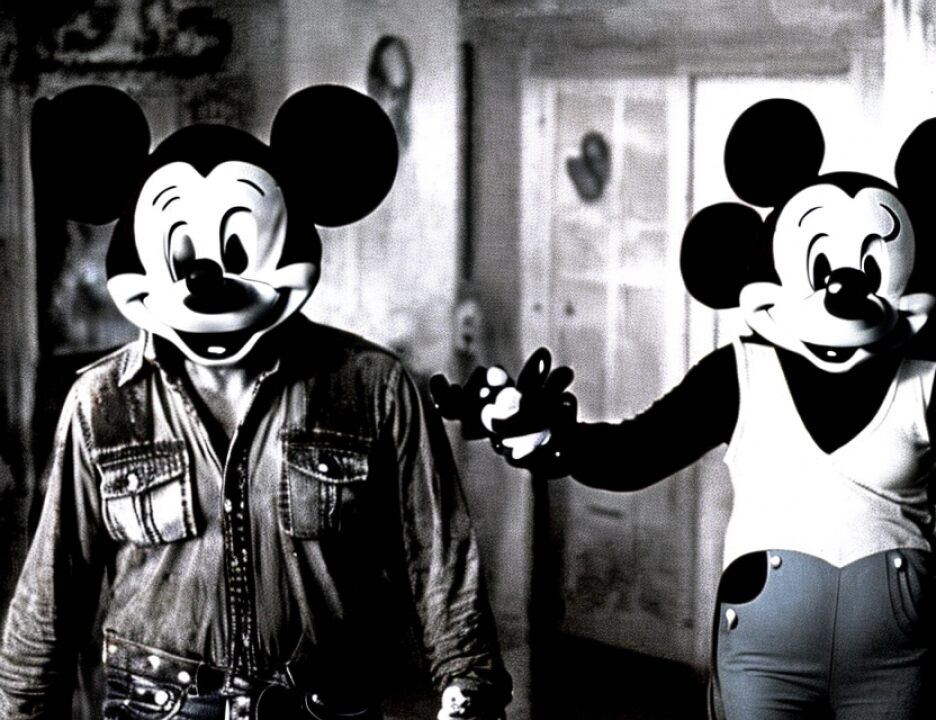

21 A. I bought it as I said, I finished the, I reconditioned --
22 well, actually I refurbished it completely, and the avionic
23 equipment, updated the version of avionics and also new paint.
24 And we took off from Dallas-Fort Worth to Khartoum.
25 Q. Did you actually fly the plane yourself from the United
566
1 States to Khartoum?
2 A. Yes, I did.
3 Q. Can you tell us the route just generally the route that
4 you took?
5 A. The airplane had a range of about 1500 miles. You cannot
6 really cross the Atlantic with that range. So we had to go up
7 north almost to the Pole and cross down to mainland. So we
8 took the first one was Dallas-Fort Worth, Slte. St. Marie at
9 the Canadian borders. From there on to a place 67 lat north,
10 I think it's Furbisher Bay, Canada and then from Fervershaw
11 Bay, Canada to Iceland to Lucan, Rome, Cairo, Cairo, Khartoum.
12 Q. How long did it take you to fly the plane from Dallas
13 through the various stops to Khartoum, Sudan?
14 A. It should have taken two days at the most but actually we
15 had some technical problems due to the bad weather in
16 Fervershaw Bay. It was minus 65, so we lost hydraulics and we
17 had a crack in all the window.
18 Q. How long did it actually take you to get there?
19 A. About a week.
20 Q. Do you recall approximately when was that you flew the
21 plane from the United States to Sudan?
22 A. The early part of 1993.
23 Q. And what happened when you arrived in Khartoum with the
24 plane?
25 A. In the sense of if you can explain the question please.
567
1 Q. You land the at Khartoum with the plane. What do you do?
2 A. Nothing. I just parked the airplane, took permission in
3 the civil aviation authorities there and I was met with Wadih
4 and I'm not sure maybe another driver or so.
5 Q. And where did you go with Wadih and the driver?
6 A. We went to Wadih's house.
7 Q. And what did you do there?
8 A. Had lunch with him.
9 Q. Did there come a time when you met Usama Bin Laden on that
10 trip?
11 A. Yes.
12 Q. When was that?
13 A. It must have been the same day, at night, we were offered
14 dinners on his behalf.
15 Q. And where was the dinner held?
16 A. At his guest house.
17 Q. And who was present for the dinner?
18 A. Quite a few people, but people that I could identify were
19 me, Wadih, Usama, a guy by the name of Abu Jaffer. I think
20 also another guy by the name of Loay, and, yes, that's the
21 names I could recall.
22 Q. We're spelling L-O-A-Y and J-A-F-F-E-R. Do you know what
23 nationality Abu Jaffer was?
24 A. Yes, he's from Iraq.
25 Q. What role did Abu Jaffer play at the dinner?
568
1 A. This was my first time to be introduced to him and he led
2 the prayers at the night.
3 Q. And let me show you what has been previously received in
4 evidence a number of photographs beginning with Government
5 Exhibit 100 in evidence. If we could display that on the
6 screens.
7 Do you recognize the person depicted in Government
8 Exhibit 100?
9 A. Yes.
10 Q. Who is that?
11 A. Usama Bin Laden.
12 Q. If we could display Government Exhibit 101 in evidence.
13 Do you recognize the person depicted in Government Exhibit
14 101?
15 A. Yes.
16 Q. Who is that?
17 A. Abu Hafs.
18 Q. How do you know Abu Hafs?
19 A. I met him briefly in Peshawar, and thereafter I think he
20 must have been over the dinner, too, with Usama.
21 Q. Do you know what nationality he is?
22 A. Egyptian.
2